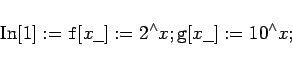
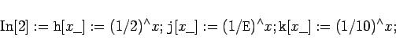
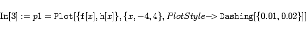
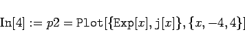
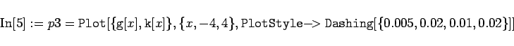
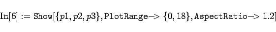
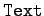
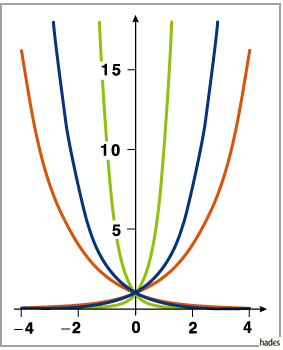

Eine Kurvenschar mit mehreren Exponentialfunktionen erzeugt Mathematica mit folgenden Eingaben:


Das sind die Definitionen der beteiligten Funktionen. Die Funktion ex braucht nicht definiert zu werden, da sie in Mathematica eingebaut ist. In einem zweiten Schritt werden die folgenden Graphiken erzeugt:



Das gesamte Bild erhält man mit (s. Abbildung):

Auf die Anbringung von Text an den Kurven wurde hier verzichtet. Das wäre mit der Graphikprimitiven  möglich gewesen.
